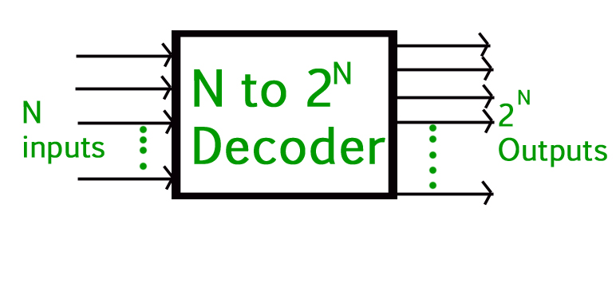
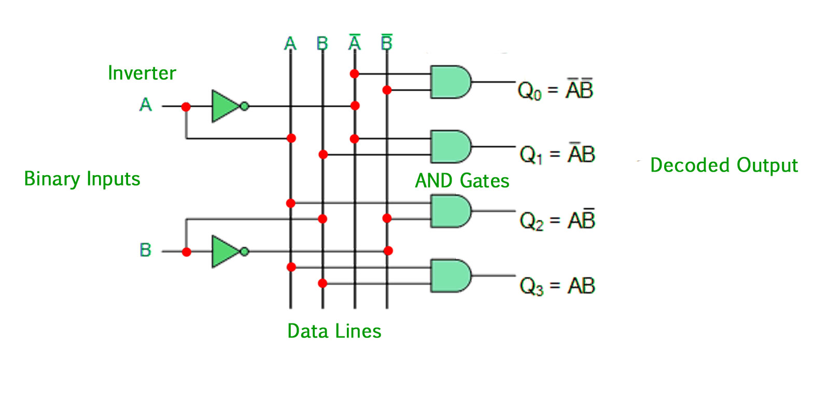
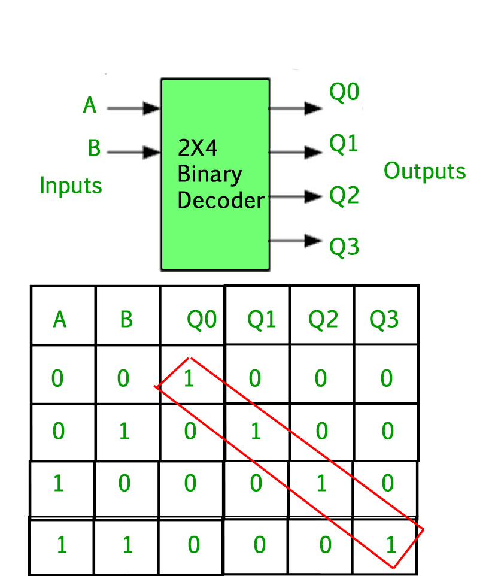

In Digital Electronics, discrete quantities of information are represented by binary codes. A binary code of n bits is capable of representing up to 2^n distinct elements of coded information. The name “Decoder” means to translate or decode coded information from one format into another, so a digital decoder transforms a set of digital input signals into an equivalent decimal code at its output. A decoder is a combinational circuit that converts binary information from n input lines to a maximum of 2^n unique output lines.

Binary Decoder –
- Binary Decoders are another type of digital logic device that has inputs of 2-bit, 3-bit or 4-bit codes depending upon the number of data input lines, so a decoder that has a set of two or more bits will be defined as having an n-bit code, and therefore it will be possible to represent 2^n possible values.
- If a binary decoder receives n inputs it activates one and only one of its 2^n outputs based on that input with all other outputs deactivated. If the n -bit coded information has unused combinations, the decoder may have fewer than 2^n outputs.
- Example, an inverter ( NOT-gate ) can be classified as a 1-to-2 binary decoder as 1-input and 2-outputs is possible. i.e an input A can give either A or A complement as the output.
- Then we can say that a standard combinational logic decoder is an n-to-m decoder, where m <= 2^n, and whose output, Q is dependent only on its present input states.
- Their purpose is to generate the 2^n (or fewer) minterms of n input variables. Each combination of inputs will assert a unique output.
A Binary Decoder converts coded inputs into coded outputs, where the input and output codes are different and decoders are available to “decode” either a Binary or BCD (8421 code) input pattern to typically a Decimal output code.
Practical “binary decoder” circuits include, 2-to-4, 3-to-8 and 4-to-16 line configurations.
2-to-4 Binary Decoder –

The 2-to-4 line binary decoder depicted above consists of an array of four AND gates. The 2 binary inputs labelled A and B are decoded into one of 4 outputs, hence the description of 2-to-4 binary decoder. Each output represents one of the minterms of the 2 input variables, (each output = a minterm).

The binary inputs A and B determine which output line from Q0 to Q3 is “HIGH” at logic level “1” while the remaining outputs are held “LOW” at logic “0” so only one output can be active (HIGH) at any one time. Therefore, whichever output line is “HIGH” identifies the binary code present at the input, in other words it “decodes” the binary input.
Some binary decoders have an additional input pin labelled “Enable” that controls the outputs from the device. This extra input allows the decoders outputs to be turned “ON” or “OFF” as required. Output is only generated when the Enable input has value 1; otherwise, all outputs are 0. Only a small change in the implementation is required: the Enable input is fed into the AND gates which produce the outputs.
If Enable is 0, all AND gates are supplied with one of the inputs as 0 and hence no output is produced. When Enable is 1, the AND gates get one of the inputs as 1, and now the output depends upon the remaining inputs. Hence the output of the decoder is dependent on whether the Enable is high or low.
GATE CS Corner Questions
Practicing the following questions will help you test your knowledge. All questions have been asked in GATE in previous years or in GATE Mock Tests. It is highly recommended that you practice them.
References –
electronicshub – Binary Decoder